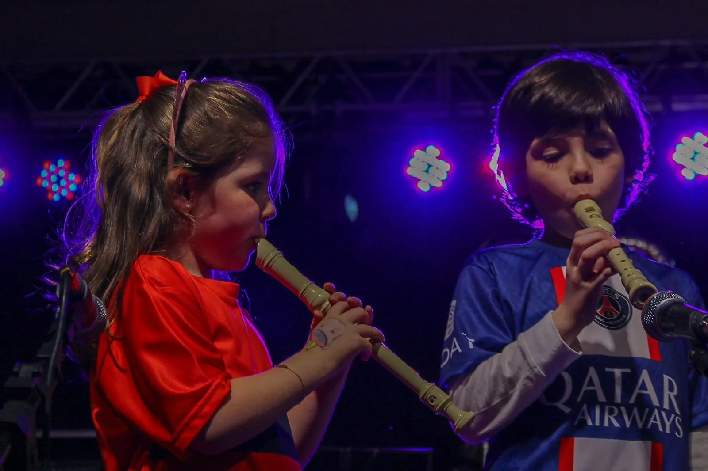
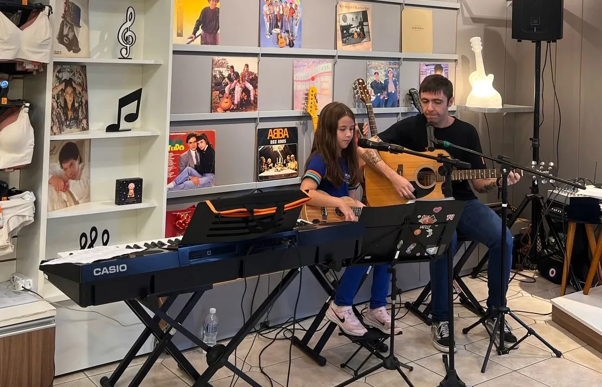
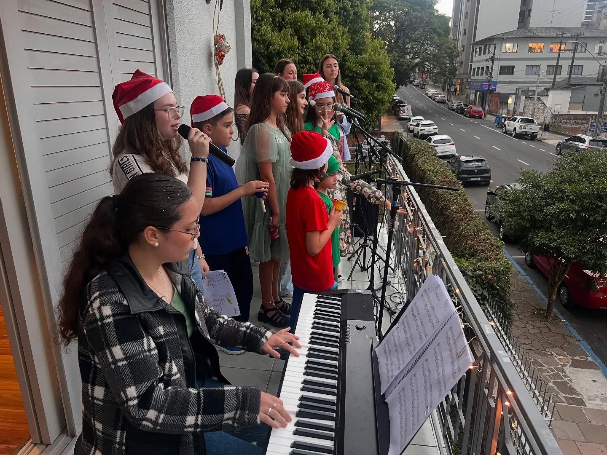
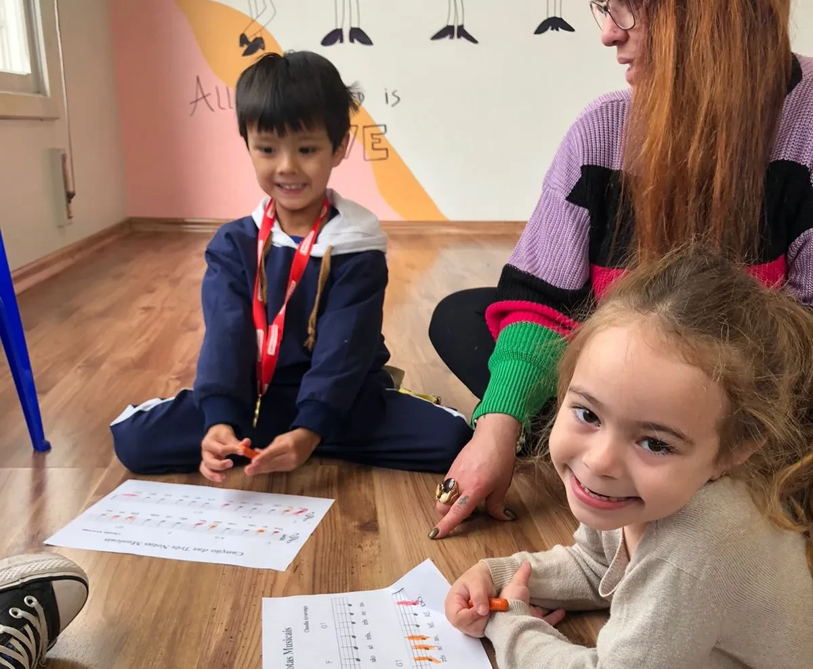
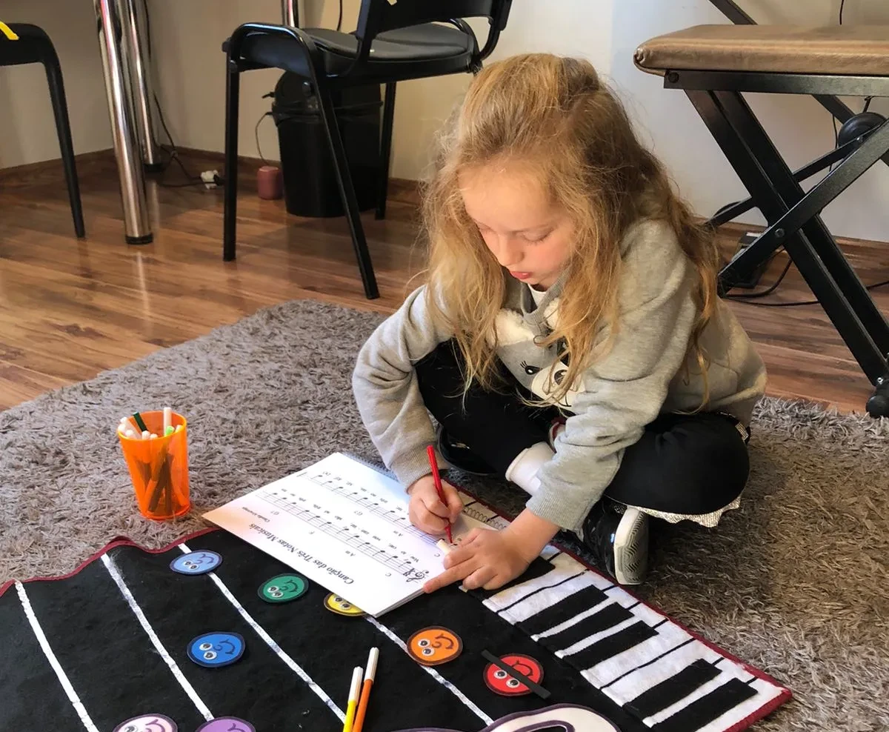
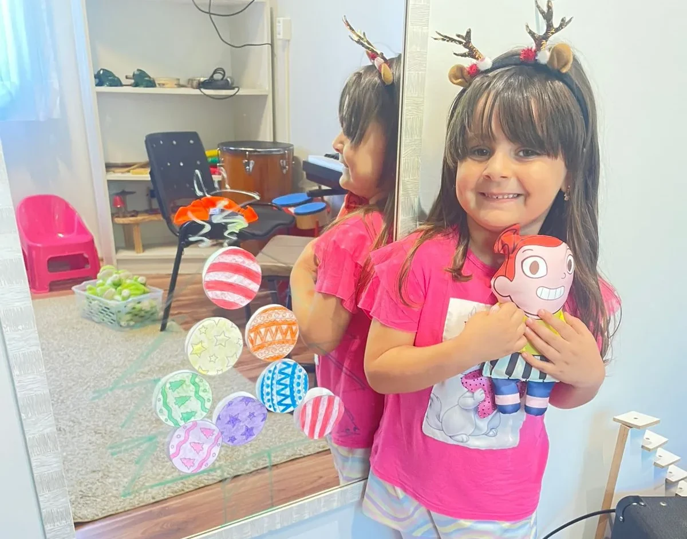
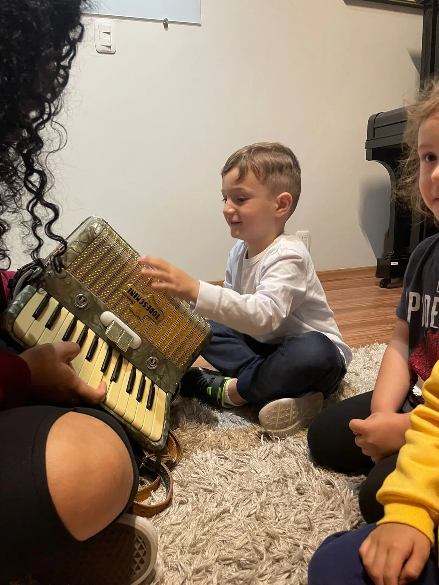
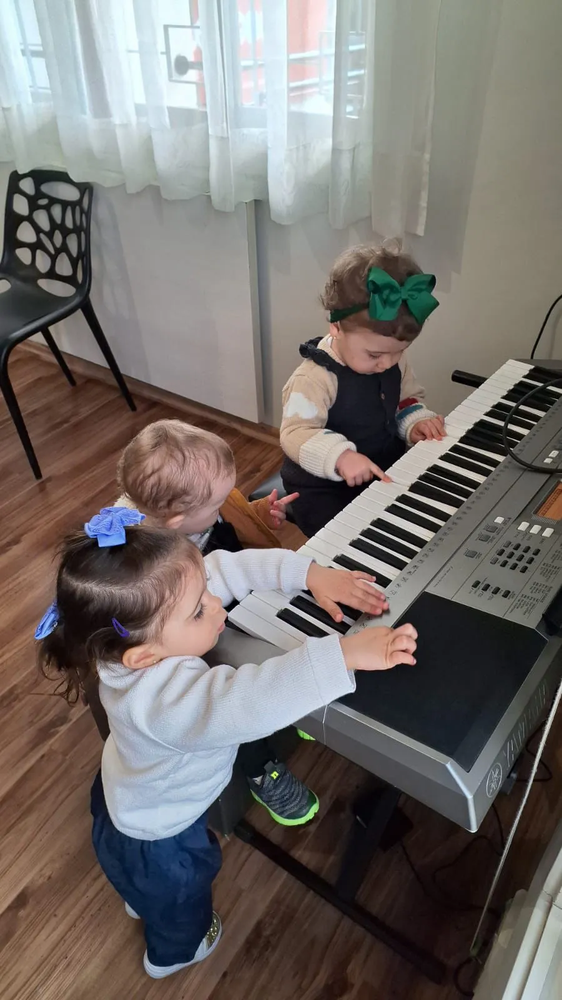
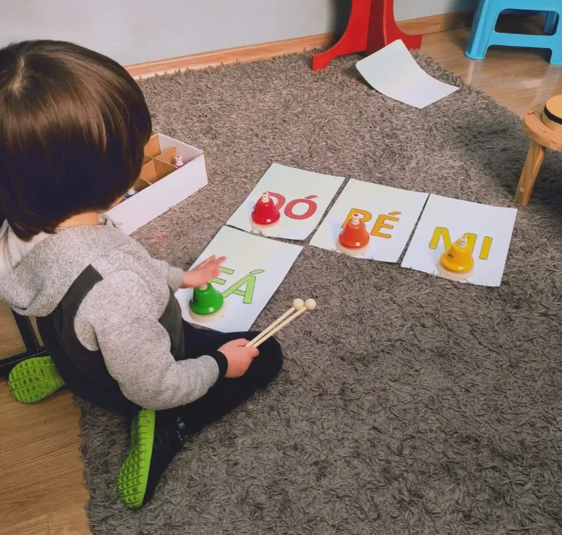

Música para Crianças









A música é uma linguagem universal que nos acompanha desde os primeiros sons da vida. Muito antes de ser vista como ferramenta para desenvolver outras habilidades, a música tem valor por si só: ela desperta emoções, estimula a criatividade, amplia formas de expressão e cria conexões profundas entre as pessoas. Como destaca o neurocientista Daniel Levitin, o contato musical organiza o pensamento, fortalece redes neurais e integra emoção, memória e aprendizagem de maneira única.
Quando a música está presente na rotina — seja por meio da musicalização, do canto, da prática instrumental ou da escuta ativa — ela desenvolve a capacidade de perceber, interpretar e criar. O aprendizado musical ativa o corpo, a imaginação, a atenção e a sensibilidade estética, favorecendo tanto a expressão quanto a consciência de si e do outro.
A musicalização infantil, por exemplo, estimula diretamente o córtex auditivo, região do cérebro responsável por processar os sons, ampliando a percepção rítmica, melódica e espacial. Crianças que vivenciam experiências musicais desde cedo desenvolvem de forma mais refinada a escuta, a coordenação e a concentração. Mas os benefícios não se limitam à infância: adolescentes, adultos e idosos também se beneficiam da prática musical, pois ela fortalece a memória, a organização interna, a criatividade e o bem-estar emocional.
Além de seu valor artístico e expressivo, a música dialoga naturalmente com diversas áreas do conhecimento. A estruturação dos ritmos, das melodias e dos padrões sonoros contribui para o desenvolvimento do raciocínio lógico, da atenção e da capacidade de reconhecer estruturas — habilidades que favorecem a compreensão de conceitos matemáticos, linguísticos e cognitivos de maneira geral.
No entanto, é sempre importante lembrar que a música não precisa "servir" a outra área para justificar sua presença na educação. Seu verdadeiro valor está em proporcionar experiências estéticas, emocionais e humanas profundas. Quando alunos de qualquer idade têm a oportunidade de vivenciar a música de forma sensível e significativa, ampliam não apenas habilidades cognitivas, mas também sua criatividade, autonomia, comunicação e senso de mundo.